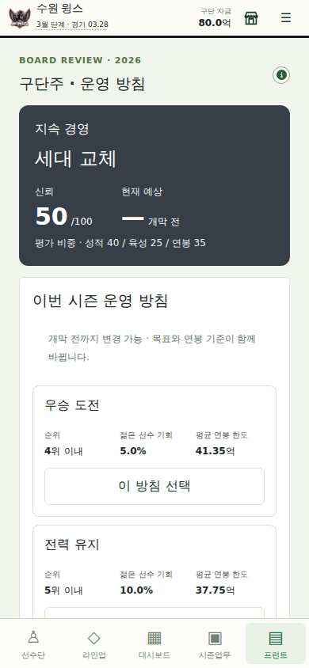
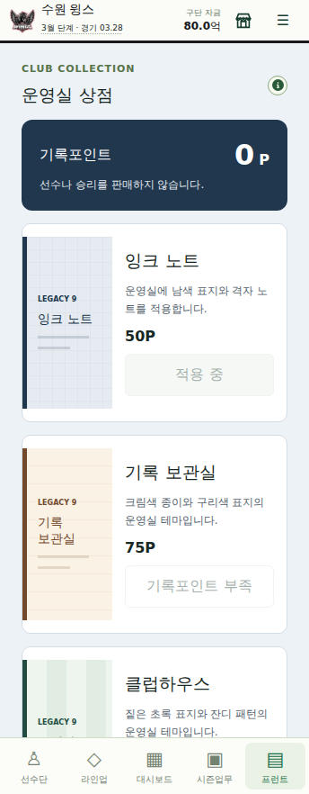

LEGACY9 / RELEASE NOTES / 0.2.1
운영에는 방향을,
완주에는 기록을.
구단주 운영 방침과 비경쟁 꾸미기 상점. 기존 경기 엔진을 복잡하게 만드는 대신, 시즌 전 선택과 시즌 후 평가를 연결했습니다.
private legacy9 · 기준 main c66fcdaf · 2026-09-16 · 공개 플레이본 자동 동기화는 이번 범위 밖입니다.
375검사 통과 / 실패 0
1,800정규리그 경기 시뮬레이션
4브라우저 화면 크기 검증
01 · Overview
0.2.0의 경기·모바일 개선은 보존했습니다. 이번 범위는 구단주 평가 루프, 실제 구매·보유·적용·저장이 작동하는 상점, 검증 재현성입니다. 선수 능력치·기본 성장·계약·트레이드 가치식의 전면 재작성은 하지 않았습니다.
구단 성향 → 연간 방침 → 선수단·연봉 선택 → 연말 평가 → 신뢰와 다음 시즌 지원
02 · Before / After
이전
목표는 순위·스폰서·장부를 보여주는 조회형 안내였습니다. 소유주 상태, 연말 평가, 신뢰와 결과가 없었습니다. 상점은 준비 중 안내뿐이었습니다.
이후
개막 전 목표와 연봉 기준을 함께 선택합니다. 실제 젊은 선수 기회와 시즌 평균 연봉을 평가합니다. 상점은 별도 포인트 원장과 영구 보유 테마를 제공합니다.
03 · Major Features / Owner Goals
구단주 성향은 성적 우선·육성 우선·지속 경영으로 나뉩니다. 최초 연봉과 선수단의 젊은 선수 비중으로 정하고 이후 유지합니다. 초기 기대 순위는 상위 21명 OVR의 리그 내 격차로, 이후에는 직전 성적으로 정합니다. 미세한 초기 능력치 차이를 과장하지 않습니다.
| 운영 방침 | 기대 순위 대비 | 젊은 선수 기회 | 평균 연봉 한도 |
|---|
| 우승 도전 | 1위 엄격 | 5% | 개막 연봉 115% |
| 전력 유지 | 동일 | 10% | 105% |
| 세대 교체 | 2위 완화 | 20% | 100% |
목표는 첫 경기 이후 잠깁니다. 육성은 개막 당시 24세 이하 선수의 타석 점유와 투구 아웃 점유 평균입니다. 벤치 등록이나 출전 횟수만 늘려서는 평가를 얻지 못합니다. 이적 전 기록은 당시 팀에 남습니다.
연봉은 일별 보유 연봉 총액의 시즌 평균입니다. 시즌말 방출로 1년의 부담을 지울 수 없습니다. 연간 점수와 신뢰를 보존하고 3년 평균 70점을 기준으로 추가 평가합니다. 지원금은 다음 시즌에 한 번, 최대 1억입니다. 기존 리그 지원을 깎거나 새 강제 해고를 넣지 않았습니다.
시뮬레이션에서 찾은 허점도 수정했습니다.
우승 도전의 순위 점수 또는 세대 교체의 육성 점수가 60점 미만이면 종합평가는 최대 59점입니다. 핵심 약속 실패를 부차적인 점수로 상쇄하지 못합니다.
AI도 같은 목표·신뢰 산식을 사용합니다. 방침은 기존 FA·드래프트·트레이드 의사결정에, 지원액은 기존 추상 예산에 연결됩니다. AI의 시설·현금 장부까지 완전 구현한 것은 아닙니다.
04 · Economy & BM
운영자금(원), 훈련포인트, 기록포인트(P)는 별개입니다. 상점 재화를 구단 돈이나 능력치로 바꾸지 못합니다. 신규 커리어 50P, 정규시즌 완주 50P를 지급하며 성적과 무관합니다. 72/144 모드 모두 시즌 기준입니다.
| 상품 | 가격 | 실제 제공 |
|---|
| 잉크 노트 | 50P | 남색·격자 운영실 테마 |
| 기록 보관실 | 75P | 종이·구리색 테마 |
| 클럽하우스 | 125P | 초록·잔디 패턴 테마 |
| 테마 컬렉션 | 미정 | 실결제 미연결 · 판매 차단 |
기록포인트 상품은 한 번 구입하면 해당 커리어에서 영구 보유합니다. 시작 지원과 4시즌 완주로 세 테마를 모두 얻습니다. 구매·잔액 부족·재구매 방지·테마 적용·기본 복원·원장·저장/불러오기가 구현됐습니다.
기존 무료 외형 편집, 저장, 경기 진행은 그대로입니다. 선수 능력치 구매, 확률형 선수 뽑기, TP 판매, 에너지 제한을 넣지 않았습니다. 반복 구매용 소모품도 없습니다. 추가 시나리오·시즌별 테마는 후속 콘텐츠 후보이지 현재 판매 상품이 아닙니다.
결제 시스템이 완성된 것은 아닙니다.
실결제 상품 요청은 코어에서도 거부하며 결제·차감·유료 이용권 발급을 가장하지 않습니다. 서버 주문, 영수증 검증, 계정 소유권, 복원·환불, 광고 SDK는 미구현입니다. 현재 과금 경험은 제공되지 않습니다.
05 · Mobile UX / Other Improvements
프런트에서 구단주 화면과 상점으로 이동합니다. 설명은 기존 정보 아이콘에 통합하고 작은 화면은 한 열로 배치했습니다. 새 구매와 방침 변경은 IndexedDB 저장이 성공한 뒤에만 화면 상태를 교체합니다.

실제 브라우저 · 개막 전 방침 선택
실제 브라우저 · 잉크 노트 구매·적용 후깨끗한 설치를 막던 lockfile 불일치도 수정했습니다. 누락된 개인 테스트 세이브 의존은 실제 코어로 시즌을 진행하는 fixture로 교체했습니다. 기존 PS 기준 해시는 원본 main과 변경본의 결과가 같음을 확인한 뒤 갱신했습니다.
06 · Balance
지원 상한 1억은 기존 리그 배분금 20억의 5%입니다. 테마 가격은 매출 최적화 자료가 아니라 무과금 수집 속도로 정한 임시 정책입니다. 평가·보상 수치는 실제 KBO 구단주 행태를 추정한 값이 아닙니다.
| 모드 / 시즌 | 평가 | 신뢰 | 기말 현금 | 잔여 P | 다음 지원 |
|---|
| 72경기 · 2026 | 59.00 | 50 | 181.87억 | 50P | 0.00억 |
| 72경기 · 2027 | 53.67 | 48 | 285.27억 | 100P | 0.00억 |
| 72경기 · 2028 | 59.00 | 45 | 394.59억 | 150P | 0.00억 |
| 144경기 · 2026 | 59.00 | 50 | 175.00억 | 50P | 0.00억 |
실제 배포 로스터와 역사 선수 공급 풀 사용. 연간 방침 외 추가 투자·선수단 수동 개입 없이 오프시즌 자동 운영. 시작 시 잉크 테마 50P 사용. 이 표는 운영 경로 검증이지 전체 경제 균형의 확정이 아닙니다.
투자하지 않은 3년 시나리오에서 현금이 크게 누적됩니다. 다음 버전은 팬·수입·시설 투자처를 함께 검증해야 합니다. 현금 과잉을 유료 소비처로 숨기지 않습니다.
07 · Technical Changes
Career.board와 Career.shop을 선택 필드로 추가했습니다. 저장 스키마 3은 유지합니다. 연봉 누계, 평가 이력, 신뢰, 지원금 원장, 상품 원장과 적용 테마를 저장하고 잘못된 금액·중복 영수증·미보유 적용을 거부합니다.
이전 진행 저장에는 구단주 목표를 소급하지 않고 다음 시즌부터 시작합니다. 상점은 명시적으로 시작 지원을 받으며 부분 시즌 완주 보상을 소급하지 않습니다. 선수/구단 ID, 기존 자산과 경기 규칙은 보존했습니다. 로컬 저장 검증은 결제 서버나 치트 방지 보안의 대체물이 아닙니다.
08 · Validation
Node 24.11.1에서 깨끗한 설치, TypeScript, 375개 검사, production build를 검증했습니다. 추가 검사는 연간 방침 잠금, 이적 기록 귀속, 주요 목표 실패 상한, 이전 저장, 중복 정산, 위조 상품 기록, 결제 차단, 화면 조회의 무변경을 다룹니다.
72경기 3시즌과 144경기 1시즌, 총 정규리그 1,800경기와 4번의 오프시즌/다음 시즌 전이를 실행했습니다. 10구단 평가, 중간 저장/복원, 3년 평가, 보상 중복 방지, 테마 이월을 확인했습니다.
344×882 · 360×640 · 390×844 · 1280×844의 Chromium에서 실제 UI 선택·구매·적용·재접속·잔액 부족·강제 저장 실패를 검증했습니다. 가로 넘침과 페이지 오류는 없었습니다. 기존 사용자 저장을 사용하지 않은 격리 프로필이며, 시즌 초기화와 하루 진행은 실제 코어 호출로 구성했습니다. 실물 기기나 전 시즌 UI 수동 플레이 검증이라고 부르지 않습니다.
검증 요약 JSON · 시뮬레이션 원자료 · 브라우저 검사 결과
09 · Known Issues
실결제·광고·계정 간 소유권·새 커리어 계승은 없습니다. AI 상세 재정/시설과 유망주 기용 최적화도 미구현입니다. 팬 지표와 다년 경제는 추가 보정이 필요합니다. 신규 평가의 10년·다수 시드 밸런스, 실물 Android/iOS 성능은 확정하지 않았습니다. 기존 로스터/역사 선수 자료의 임시 능력치와 큰 번들 경고는 남아 있습니다.
현재 상점은 테마 3종의 수집 루프입니다. 장기간 재구매 수요나 매출을 입증한 BM은 아닙니다. 이번 버전에서 성숙한 경기 엔진을 바꾸지 않은 것과, 전체 게임의 재미가 검증됐다는 것은 다릅니다.
10 · 0.2.x Backlog
다음 우선순위: ECON-FANS-022. 수입·팬·시설 투자의 다수 시드 민감도와 유저/AI 운영 차이를 먼저 측정합니다. 이후 인물형 코칭스태프, 스카우팅 정보의 불확실성, 선택형 시즌 사건, 추가 시나리오, 계정 소유권·결제 복원을 별도로 설계합니다.
전체 감사와 규칙: 저장소의 docs/design-audit-0.2.1.md, docs/owner-goals-v2.md, docs/commerce-v1.md.
11 · Commit History
핵심 코드: 37fea9a 구단주 코어, 178fd3c 상점 원장, a0a9caa 모바일 UI·저장, e7aca96 재현 가능한 검사, 799aee0 주요 목표 실패 상한.
검증 입력 HEAD까지의 전체 작업 이력
| Commit | 목적 |
|---|
8290746 | ci: add isolated Node 24 validation and private source checkpoint |
0faad95 | ci: capture repaired lockfile and matching offline validation runtime |
bd70ea9 | ci: add guarded patch checkpoints on isolated development branch |
906a1cb | chore: persist tested owner-core checkpoint for guarded integration |
37fea9a | feat: add contextual owner mandates, yearly trust and bounded support |
be3f2d8 | ci: accept checksummed compact checkpoints without relaxing HEAD guards |
d0a4510 | chore: persist validated cosmetic economy checkpoint |
178fd3c | feat: add cosmetic-only points ledger and block unconfigured payments |
10ff3ae | chore: persist tested mobile office integration checkpoint |
e56c525 | chore: repair checkpoint transport checksum before code integration |
e09de04 | ci: recover two verified transport substitutions under original SHA256 guard |
a0a9caa | feat: expose owner mandates and cosmetic purchases in the mobile office |
c7e55f7 | ci: enforce clean installs and retain only validation logs |
9e30210 | test: exercise owner plans and shop persistence in isolated browser profiles |
71ac5bc | ci: run isolated mobile browser acceptance checks with screenshots |
210d0ff | test: correct browser fault injection and cover four responsive sizes |
5552edb | chore: persist reproducible 0.2.1 quality checkpoint |
e7aca96 | test: make 0.2.1 regression and multi-season validation reproducible |
58fea3a | chore: checkpoint simulation-driven owner evaluation guard |
799aee0 | fix: prevent secondary scores from masking failed owner mandates |
b722100 | ci: validate latest branch head without queuing obsolete full suites |
7c1fab5 | chore: checkpoint specification links and verified mobile refinements |
d044aec | docs: align 0.2.1 specifications and polish narrow-screen shop labels |
25c3adb | docs: record cross-system design debt and 0.2.1 scope decisions |
efc4b1e | docs: specify owner mandate equations, AI links and save compatibility |
47837ed | docs: define cosmetic economy and explicit unconfigured-payment boundary |
2cf3098 | test: generate 0.2.1 report from executed checks and verify rendered evidence |
c5b6dc4 | ci: verify and persist isolated 0.2.1 release evidence under HEAD guard |
검증 입력 HEAD: c5b6dc45aebf5e66f423e45fbc4a04d082586737
증거 파일과 인수인계 상태를 저장하는 후속 커밋은 이 HEAD 다음에 생성됩니다. 최종 main HEAD는 GitHub ref를 기준으로 확인합니다.